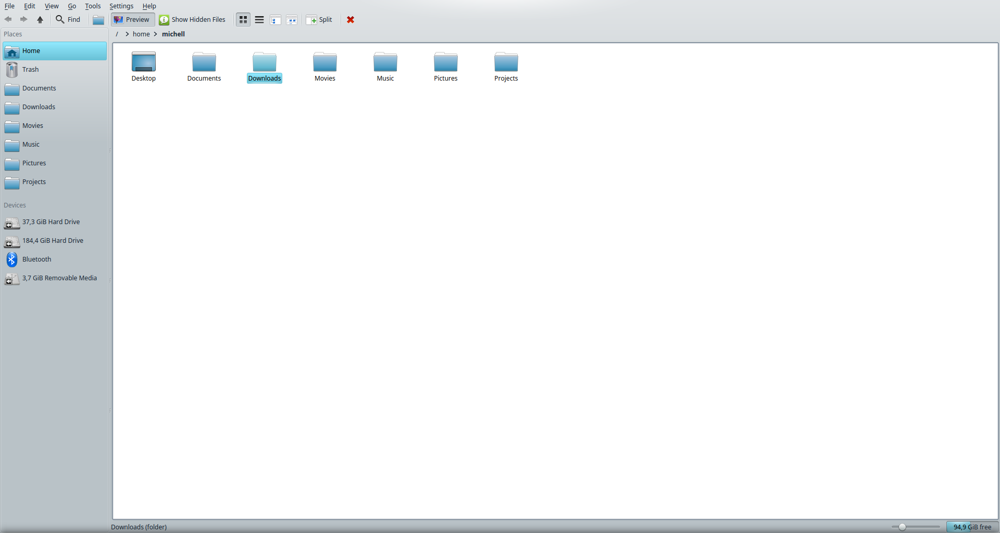
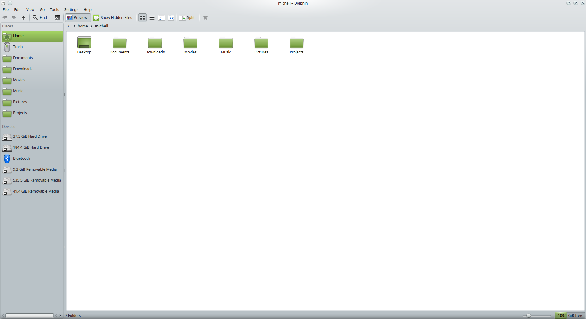
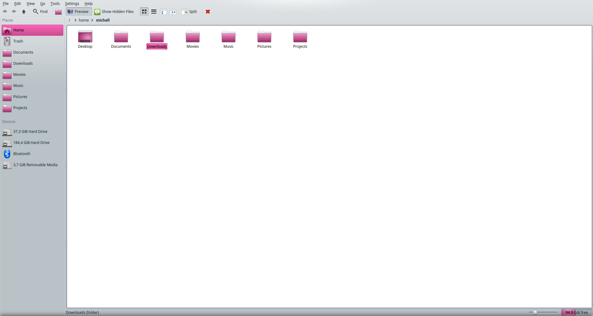
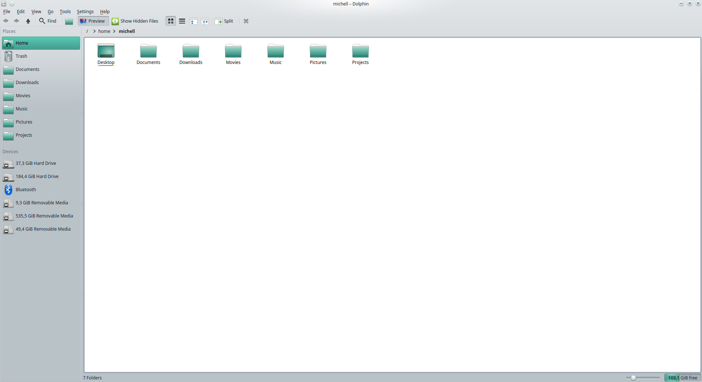
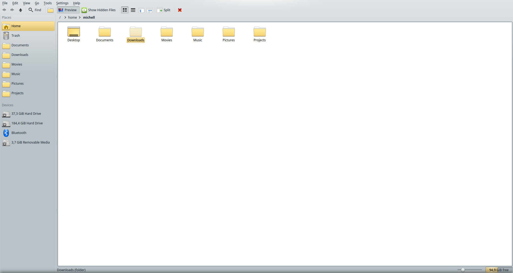

Fala pessoal, tudo tranquilo?
Desde quando comecei a ser um usuário Linux, há alguns anos, sempre gostei muito da distribuição Linux Mint, preferêncialmente a versão com o ambiente gráfico KDE.
Na versão 17.1, o Linux Mint trouxe um conjunto de ícones denominados Mint-X. Entretanto, diferente de outros ambientes gráficos como o Mate ou Cinnamon, o KDE não possuia temas de cores que combinavam com os novos ícones. Diante desse fato decidi criar temas de cores para combinar com cada conjunto de ícones.
Screenshots
Abaixo segue alguns screenshots do tema e de sua respectiva KDE Color.
- Aqua: 
- Green (default): 
- Pink: 
- Teal: 
- Yellow: 
Segue os links de downloads de cada tema.
- MintXAqua
- MintXBlue
- MintXBrown
- MintXGray
- MintXGreen
- MintXOrange
- MintXPink
- MintXPurple
- MintXRed
- MintXSand
- MintXTeal
- MintXYellow
Instalação
Clique no link da cor desejada e faça o download do aquivo .color e copie-o para o diretório ~/.kde/share/apps/color-schemes. Após isso, basta ir em Configurações->Aparência->Cores e selecionar o novo tema de cores.
Conclusão
É isso pessoal. Espero que gostem dos temas. Você pode acessar a página dos temas no Github através deste link. Sinta-se livre para contribuir e/ou fazer alguma crítica ou sugestão.
Vlw pessoal. Até o próximo post!